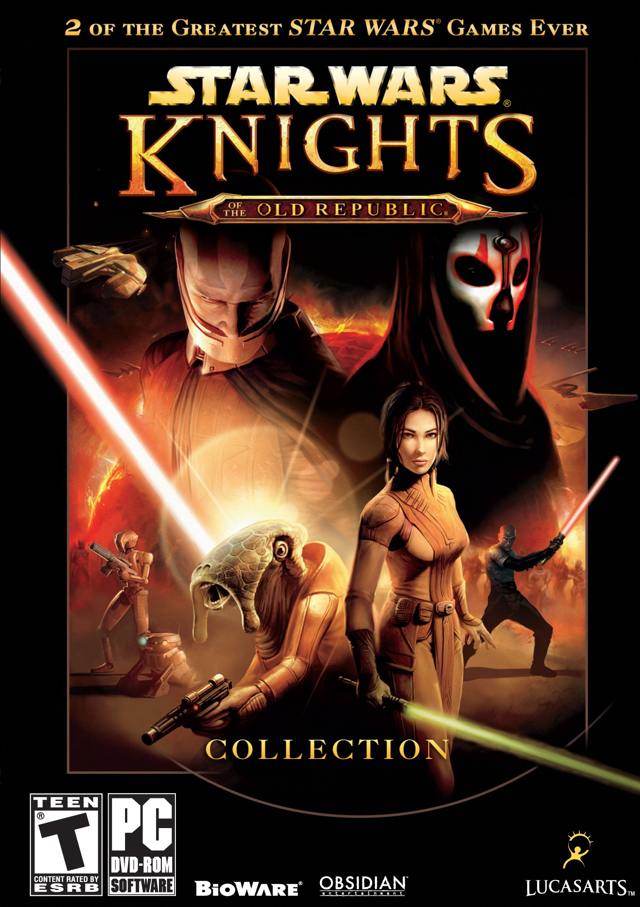

Julien Ducrocq
Space Addict - Développeur autodidacte
Résumé
Passioné d'espace (astrophysique, technologie...), de volcanologie, d'informatique et de jeux vidéos, j'ai effectué des études dans l'aérospatial tout en continuant à me former dans les autres domaines.
Je me consacre actuellement à l'aprentissage du web comme en ateste cette superbe page de profil Github.
Some links :
Mes jeux favoris
DISCLAIMER : Le sujet est très vaste, bien trop pour une seul page. D'autres franchises meriterait leur place ici
 |
Portal 1 & 2 & ... (mods)Un super jeu de réflexion/action devenu culte. SPAAAAACE ! |
The Witcher 1 & 2 & 3Adapté d'une série littéraire de fantasy polonaise à succès. Le 3 a redéfini la norme pour un RPG fantasy. L'univers est très adulte, loin des caricatures du genre. En plus d'être original. |
|
|  |
Star Wars Knights of the Old Rebublic 1 & 2Un RPG star wars se passant 4000 ans avant les évenements des films. Fait parti de l'univers étendu. Un must. |
Kerbal Space ProgramUn jeu dans lequel vous créer des fusées et autres objects spatiales pour les envoyer explorer le système solaire. Parfait pour découvrir l'exploration spatial avec une touche d'humour. |
|
Orbiter Space Flight Smulator 2016Une simulation de mécanique spatial gratuite très poussé. Un indispensable pour les passionés du spatial. |
|
 |
God of War SagaUne série de jeux culte inspiré et se déroulant dans la mythologie grec où vous incarner Kratos et suivait son destin. |
Mes films favoris
DISCLAIMER : Le sujet est très vaste, bien trop pour une seul page. D'autres franchises meriterait leur place ici
H2G2 : The Hitchhiker's Guide to the GalaxyUn film culte dont je ne dirais qu'une seul chose: 42 |
|
Star Trek 1..10 + Star Tek 1..3Une série de film plutôt réussi dont certains pour les anciens s'insère entre les saisons des séries. Les nouveaux sont des reboot. |
|
Star WarsEst-il encore besoin de présenter ces films ? |
Mes séries favorites
DISCLAIMER : Le sujet est très vaste, bien trop pour une seul page. D'autres franchises meriterait leur place ici
 |
Star Trek Voyager (+ Enterprise et Next Generation)Des séries Star Trek à voir et à revoir. |
Stargate SG1 (+ Atlantis)La meilleur saga de SF de mon enfance. |
|
DexterVenez suivre le quotidien d'un tueur en série hors du commun. |
|
Breaking BadUn série culte |
|
Game of ThronesLa meilleur série de hard-fantasy depuis longtemps |
|
LuciferUne série que j'ai découvert par curiosité et qui m'a happé. Une vision intéréssante de ce personnage |
Mes livres favoris
DISCLAIMER : Le sujet est très vaste, bien trop pour une seul page. D'autres franchises meriterait leur place ici
Le seigneur des AnneauxLe chef d'oeuvre de Tolkien. |
|
 |
A song of Ice and FireNom original de la saga littéraire à l'origine de la série Game of Thrones. Tout est dit. |
Harry PotterComme Star wars : nul besoin de le présenter |
|
La stratégie EnderUn super livre de SF anticipation. |